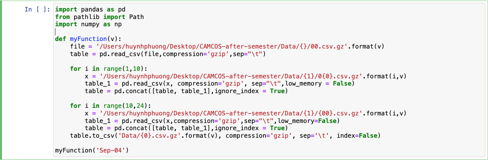
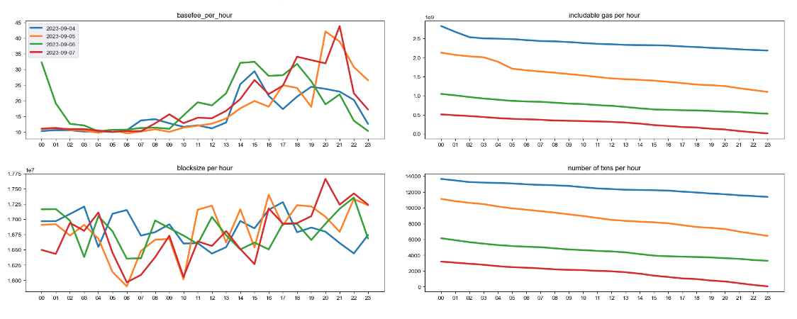
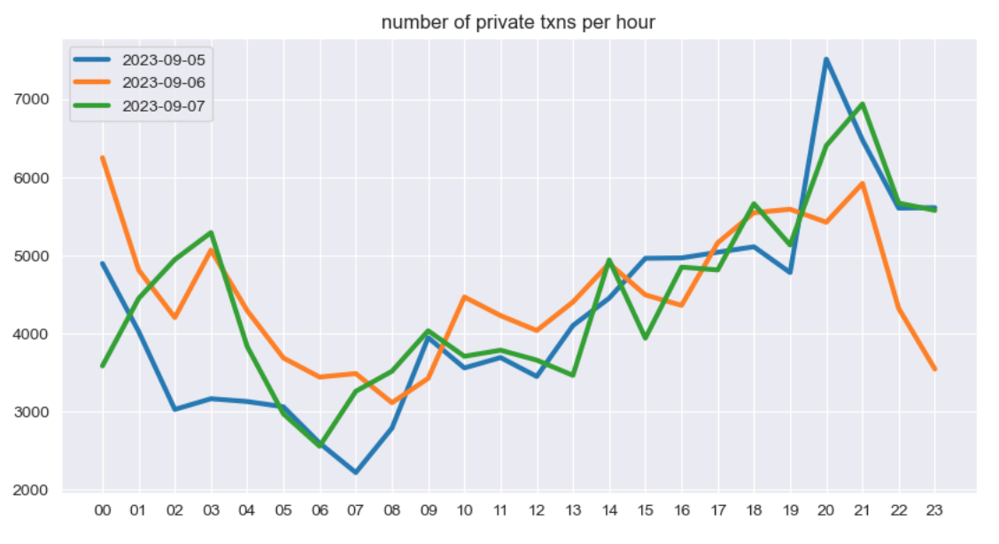

Ethereum Blockchain Research
I. Introduction
As part of the CAMCOS (Center for Applied Mathematics,
Computation, and Statistics) course, this project is conducted by the Department
of Mathematics and Statistics at San Jose State University, with sponsorship from
Ethereum researchers. The primary objective is to attain censorship resistance.
Within this project, we are organized into two teams: a data team and a theory team. The data team is
responsible for collecting data from BlockNative, conducting data analysis, and performing data
manipulation. Meanwhile, the theory team utilizes this information, along with comprehensive research
on the Ethereum blockchain system, to analyze a potential solution—specifically, a forward inclusion
list (FIL) design intended to enhance censorship resistance. While the primary project details can be accessed
here,
I have independently conducted a supplementary analysis to uncover crucial insights that may contribute to the overall
research effort as a theory team member.
II. Data Aggregating and Processing
Firstly, I used the data files provided by the data team to include the data from September 4th to September 7th for my analysis.
After that, I combined the data into one csv file. The data information and data cleaning process detail can be found here. There was some data entry error and some unused columns dropped from the data frame that yeilds a complete table containing only confirmed and failed transactions in only US-region. Here is the complete table.

III. Data Analyzing
To explore the memory pool data, I gave myself some questions that could be answered through the data.
- How does the fluctuation in peak hours impact the base fee and mempool traffic?
- Over the course of these three days, what is:
- The average gas included in each block throughout a 24-hour period?
- The base fee over a 24-hour duration?
- The amount of includable gas over the course of 24 hours?
To focus on a 24-hour timeframe, I introduced an "hour" column to facilitate data grouping on an hourly basis. In the data processing phase, I utilized the confirmed transaction gas information to compute includable gas. This represents the gas available in the mempool that can be included into the current block. The algorithm involves deducting the block number at which a confirmed transaction is finalized ('curblocknumber') from the number of blocks the transaction had been waiting for inclusion. The gas from the transaction is then added to these waiting blocks, contributing to the includable gas.
After data processing, I used the information to create a dataframe that contains average base fee, average includable gas per block, average blocksize (included gas in each block), and average number of transaction in each block over 24 hours in those four days.
Looking at the graphs, I notice that
- the base fee reaches the highest at 3-9pm and lowest at about 1-9am,
- the block sizes (more gas in each block) are also the largest from 1 to 9pm,
- the includable gas in the mempool decreases over time as well as the number of transactions in the mempool.
The odd thing is, the block sizes are still high even though the includable gas decreases. One possiblility is because of the private transaction. Private transactions are the transactions that go directly to the validators without going through the mempool. I decided to seperate the transactions that have the pending is zero (private transactions) and transactions that have the pending is greater than zero.
The private transactions seem to stay consistent between the peaked hours and the slow hours. This explains why the block sizes are high even though there is little includable gas in the mempool.
IV. Conclusion
This finding is personally meaningful to me. Private transactions uncover a hidden market working in parallel with mempool activities. This advantage gives blockchain workers the ability to create a secondary market, allowing them to bypass transactions susceptible to censorship. This presents a challenge to the censorship resistance of the Ethereum blockchain system (through topping-off market and abusing the spirit of the FIL sections).
Our team has created a comprehensive report featuring in-depth analysis supported by statistical and mathematical evidence, along with effective documentation and research. This report will guide readers from a brief introduction about blockchain and censorship to the FIL mechanism.